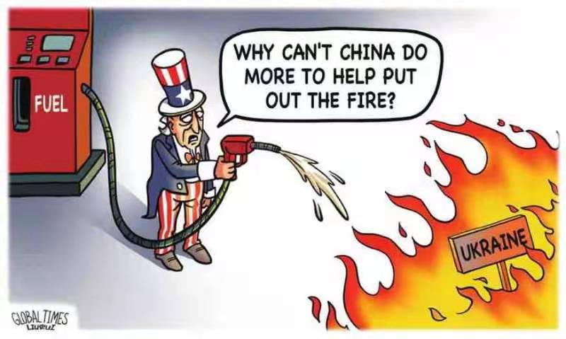

On March 1, Katerina Kotrikadze, a former anchor of the Russian pro-oppositional TV Channel Rain and currently a journalist in exile, was on her way home in Moscow after a long and hard day when she received breaking news saying that TV company she worked for had been blocked. Some sources also told her that the Russian Special Forces were heading towards Rain's building, but they never showed up. Since TV Rain was eventually silenced by the government, Katerina and her family had to leave Russia immediately.
“My husband, who was an editor of TV Rain, returned home very late that night and I thought that I had already lost him. Each night, I went to bed thinking that special forces might arrive at 6AM. We had a place where we could hide our phones and laptops. Millions of times I imagined explaining what was happening to my daughter. I don't know how they let us flee the country, probably they wanted to get rid of us”, says Katerina Kotrikadze.
In the early days of the Russian invasion of Ukraine, a few pro-oppositional media outlets in Russia offered alternative perspectives about the war, but Kremlin narratives still dominated the Russian media. Headlines collected from the leading Russian media organizations such as 1tv, Izvestia, Lenta, Gazeta, and Ria between February 24 and March 2, show that sanctions and other measures implemented against Russia were the only directions that Russian media covered in granular detail.
5 Russian media outlets published around 8478 articles about the war in Ukraine throughout the first week of the invasion
More than a half 4445 pieces were about sanctions and other measures against the Kremlin
2533 pieces sought to justify Russia’s actions in Ukraine in different ways
577 articles discussed negotiation process
348 pieces emphasized Russia's advantage, reporting that Russian armed forces were defeating Ukrainians
575 articles illustrated the level of support a few countries showed for Russia.
"There was a major emphasis on sanctions to convince people that the entire west was against Russia. Look how fiercely are they fighting against us? – this was the government’s message. On the other hand, showing that some countries, such as China, India, and few others were not joining the sanctions, was a way to stress that a new market was opening up for Russians”, - says Katerina Kotrikadze.
By focusing on sanctions the Kremlin attempted to distract the attention from the tragedy unfolding in Ukraine and promote its own version of events. The number of articles published about the Western sanctions against Russia has been increasing during the first week of the war, but the harsh reality in Ukraine was completely ignored by the Russian media. All the pieces that described the situation in Ukraine represented an attempt to justify Kremlin’s decisions and focused on the potential threat from the west.
“The idea was to explain, why it was kind of a necessity, in other words why starting the war was inevitable,” says Stansilav Budnitsky, who has worked on Russian media politics for years. Originally from Russia, Stanislav currently is based in the USA and has been following the Russian media coverage of the war since its early days. He thinks that the Kremlin’s main messages largely revolved around the west.
“We were given no choice, we were backed into the corner, - this was the main narrative. Ukrainian Nazi are kind of puppets of the West. And at the same time, they're victims, because the West is using Ukraine to advance its goals and now all Ukrainians are going to die, because of the west”, - says Stanislav Budnitsky.
On February 24, when Russia started bombarding the biggest cities and firing missiles on populated areas, loud sirens became a constant presence in Ukrainians’ daily life. People were hunkering down in bomb shelters, basements, and subway stations. On March 2, The United Nations Human Rights Monitoring Mission in Ukraine said that during the first 5 days of the war, it had recorded 752 civilian casualties in Ukraine.
Katerina Kontrikadze vividly remembers the first days of the war, when TV Rain was still broadcasting in Russia. “I didn't cry only when I was on air”, she says. TV Rain was among a few pro-oppositional media companies in Russia, where people could hear the voices from Ukraine about the ongoing situation in the war zone.
“In our programs, we had politicians, colleagues, and ordinary citizens from Ukraine telling us horrible stories about bombings, waiting for death in bunkers. In the 21st century, Russia started a large-scale war and killed innocent citizens. I am a Russian journalist and this was a catastrophe for me.”- says Katerina Kotrikadze.
Thousands of headlines from leading Russian media outlets show that not a single piece has been published about the victims and injured citizens in Ukraine. Russian media, however, presented a completely different picture, portraying Ukrainians as aggressors who killed innocent civilians in the eastern region.
According to headlines collected from the leading Russian media outlets, anti-Russian, against, and sanctions were the most commonly used words during the first week of the war. Of the 8478 headlines, on average one out of six included the words: against, anti, or sanctions.
Vasily Polonsky, a Russian journalist who worked for TV Rain, is not surprised by this trend. Still residing in Moscow, Vasyli seeks to be involved in alternative media. He runs a Youtube channel, writes articles for different publications, and quite often works without earning a penny. As Vasily explains, the term "sanctions" is extremely vulnerable for Russian society.
"Sanctions do not ruin Putin's life, they affect us - ordinary citizens. This is not perceived as a way to assist; it is viewed as an attack on us and unites Russian people”, - says Vasily.
"Anti-Russian is the most interesting word to me. I recall Putin's letter from 2001, in which he said Ukraine does not exist, Ukrainians do not exist as a people. Putin used the term – anti-Russian in his letter, later experts started mentioning it, and now we hear “anti-Russian” quite often”, - says Katerina Kotrikadze.
Another term that frequently appeared in headlines across 5 Russian media outlets was “Ukrainian armed forces”. The most interesting part in this case is the context in which Russian media used these words. In the vast majority of headlines "Ukrainian armed forces" was followed by the term “opened fire”, indicating that Ukrainians were assaulting peaceful citizens in the eastern regions of the country. In other cases, Russian media was reporting that Russians were successfully taking various cities and defeating Ukrainian armed forces.
While 1050 pieces mentioned either Lugansk or Donetsk, eastern regions of Ukraine, only 99 headlines mentioned Kyiv in the context of the situation there. Interestingly, all of them sought to justify Russia's actions by showing that its military forces were not targeting ordinary citizens in the capital and they were not posing a threat.
1050 articles mentioning Lugansk and Donetsk claimed that Ukrainian armed forces were assaulting and killing civilians in that part of the country. The vast majority of headlines mentioning those regions were about Ukrainians’ bloody attacks against local citizens.
Selecting the right words while reporting has always been a key issue for the Kremlin. In the early days of the war, the Russian government warned that referring to the ongoing military campaign as an “invasion”, “attack” or “declaration of war” would cause problems for the local media. Instead journalists had to use “special operation”.
Later the Russian parliament approved a law criminalising the intentional spreading of what Russia deemed to be “fake” reports. According to the new law, Russians could face prison sentences for disseminating information that goes against the Russian government’s position on the war in Ukraine.
On February 26 one of the main news in Russia was the statement by Roskomnadzor (The Federal Service for Supervision of Communications, Information Technology and Mass Media) asking a few Russian media organizations, including TV Rain, to remove false information about the so-called operation in Ukraine. Katerina Kotrikadze recalls a phone call from Roskomnadzor to her husband, who worked as an editor in chief at TV Rain in Moscow.
“It happened for the first time since he started working on this position two and a half years ago. He was told by Roskomnadzor's representative - I know you are a professional and could you pay attention to the words you use? You should rely on the official position of Russia. My husband told her that we were relying Moscow's position, but we were also covering Ukraine's position”, says Katerina Kotrikadze.
"Okay, be careful", those were the last words the representative of Roskomnadzor said to the editor in chief. Later, TV Rain also received an official letter, and the editor eventually decided to remove that particular piece. “ Working as a journalist in Russia unfortunately means being prepared to make compromises”, Says Katerina. The Russian government, however, still blocked TV Rain in a few days.
“I don’t know how they wanted to get undressed, above or below the waist, But I think it would be a disgusting sight in any case,” – This is Vladimir Putin’s comment about the G7 leaders during his visit in Tajikistan. When asked about Western leaders mocking his shirtless pictures at the G7 summit, Russian president noted that to look good it’s essential to stop abusing alcohol and other bad habits.
There is no doubt that Putin and the western leaders have had strained relations for a long time and not surprisingly it has always been reverberated in Russian media. This attitude became particularly evident after the start of the war in Ukraine. Each headline mentioning Biden, Johnson, Macron, and other leaders was a remainder for Russian people, that their goal is and has always been to ruin their country.
The most frequently mentioned western leader was Joe Biden, who appeared 398 times in the headlines of 5 Russian media publications throughout the first week of the war. The most often used words alongside the name of the American president were against and sanctions.
Although Boris Johnson appeared only 43 times in 5 Russian media outlets between February 24 and March 2, the British prime-minister's radical stance was strongly emphasized.
“ In response to Russia's actions in Ukraine, Johnson promised a strong Western reaction”, “Johnson called on the West to isolate Putin politically”, “Johnson promised to squeeze Russia out of the world economy”,“Johnson considers the West should isolate Putin” – These are a few examples of headlines that illustrated to Russians that the British prime-minister was one of the architects of anti-Russian politics.
In the wake of the Western leaders' "hostile" measures and statements, Russian media didn't forget to promote the Kremlin's version of events by quoting Putin's allies. Lukashenko was the most frequently mentioned leader after Zelensky and Putin. The name of the Belarusian president emerged 160 times in headlines and the word – negotiations was one of the most commonly used terms alongside Lukashenko, an attempt to portray him as a mediator during those difficult times.
Russian media has devoted special attention to quotes from leaders and foreign diplomats expressing support for the government’s decisions. It was a perfect opportunity to demonstrate that some people publicly shared Kremlin's narratives.
Early morning on February 27, Russian media outlets published a piece about the tweet by Chinese diplomat Lijian Zhao. A representative of the Chinese foreign ministry posted a caricature about the war in Ukraine and wrote – “The US should ask itself who's the one that started all these”.
Interestingly, the titles of this particular story were almost identical on all media platforms. “Chinese Foreign Ministry hinted at US responsibility for Ukraine” - This headline was published word for word by several Russian media outlets, although some made minor changes, the phrase - "hinted at US responsibility" remained the same across all media publications.
There are many other examples in Russian media when almost identical headlines appear. Furthermore, different publications report the same topics and angles most of the time.
Kotrikadze is familiar with the rules Russian media has to follow and knows how all headlines are generated behind the scenes.
“Alexey Gromov, who works in the President's administration, oversees the media coverage. Every week, he meets with editors and journalists from every publication, radio station, and TV station. It is no secret that everyone attends these meetings, but I have never been. It is Gromov who is passing information about how to report, what topics to cover, and what words to use. Additionally, editors receive emails from Kremlin on a regular basis”, - says Katerina.
According to the Kremlin’s official website, Alexei Gromov is the first deputy chief of staff of the Presidential Administration in Russia. Gromov is a politician and Soviet-Russian diplomat. Having spent a long time in Putin’s inner circle, it is widely believed that he enjoys the unlimited confidence of the Russian president. According to Russian investigative journalists, Gromov is responsible for state propaganda, making instructions and directives for leading media outlets.
It is highly likely that his job has become easier over the last few months, since all oppositional media outlets have disappeared in Russia. Stansilav Budnitsky confirms that there is no nationwide oppositional media in Russia after the new law about fake news was passed.
“It's a very harsh law. It led basically to the exodus of Russian journalists abroad. And it led to the shutdown of almost all independent media outlets. Independent journalists realised that they could not report under this law", says Stanislav.
Russian TV Rain was back on air from Latvia in July, after being forced off air in Russia. It will stream its programs on its YouTube channel, a platform that is not censored in Russia.
Various independent Russian journalists chose different routes to escape the Kremlin's censorship. Some of them moved to another country, others launched their own YouTube and telegram channels, and a few of them decided to stay in their home country and fight for their rights as journalists.
Vasily Polonsky is not afraid to refer to Russia's actions in Ukraine as a war instead of as a military operation, and is determined to cover all vulnerable topics independently, according to journalism standards.
“Why should I leave? Because of Putin? I won’t go anywhere because of him. He is not my president, I didn’t vote for him, he violated the law, killed journalists, including some of my friends. He jailed human rights defenders and acitivists. Why should I leave? This is my fight”, - says Polonsky.
Masha, not her real name, fled Russia shortly after the war in Ukraine started. Her family is still based in Moscow and as she says, “speaking up is becoming more and more dangerous in Russia”. We changed her name to protect her identity and her family from the potential threat.
In the wake of the Russian invasion of Ukraine, Masha realized that she could not stay in her home country, so she and her friends moved to neighboring Georgia. She is currently involved in various campaigns to assist Ukrainians during the war.
“I am lucky to have friends, family and everyone around me who feel the same way I do about the war", says Masha.
As an active citizen, she has always been following the news about Russian politics and understands how Russian media works in her country, however some coverage still comes as a surprise to her.
“I recall when I was listening to the pro-governmental radio station in Moscow, my first thought was - how dumb is that? Really? Is this the way of lying? When you compare the things, one day they say something and the next day they report completely contradictory news," says Masha.
On the third day of the war, all the leading international media outlets were reporting that Zelensky refused the US offer to evacuate, saying 'I need ammunition, not a ride'. Those words appeared everywhere - on social media, in newspapers, and magazines, but they couldn't reach Russian media. Moreover, leading Russian publications claimed the same day that Zelensky had left Kyiv, quoting state duma representatives.
Every time the western media talked about the Ukrainian resilience and strength in the face of the war, Russian media outlets reported that Ukrainian armed forces started giving up positions and weapons. While international publications covered stories about the casualties in Ukraine from missiles raining down across the country, Russian media claimed that Ukrainian “nationalists” were assaulting residential areas in Donbass and Donetsk.
"Usually, if you read the article of an independent journalist, it is easy to tell which part is a fact and which part is their opinion. When it comes to Russian pieces, things are different. You should read everything very carefully, in order to find out if there is any truth at all." says Vasyli Polonsky.
Most of the time, he says, this is not fake news, but just stupid lies. "My niece lies to me like this, when he tries to hide something from me", says Polonsky.
Analytic center Levada in Russia conducted a survey in March and asked Russians if they supported Russian military actions in Ukraine? According to the Levada Center, 53% of respondents strongly supported, 28% said - yes, 8% responded - no, 6% strongly disagreed, and 6% said it was hard to answer.
The biggest question outstanding is if Russian people believe the state propaganda. Vasily deems that it is difficult to find out what people actually think about the war, since majority of citizens is afraid to speak up.
“It seems to me that those who support the war are much fewer than those who strongly oppose it. Nevertheless, people who approve of government actions are more visible because they wear shirts with Z or put it on their cars. I tried to have a dialogue with them, listen to their opinions, they usually rely on quotes from Putin, Soloviev, and others. They don't know anything about the data and history”, - says Vasily.